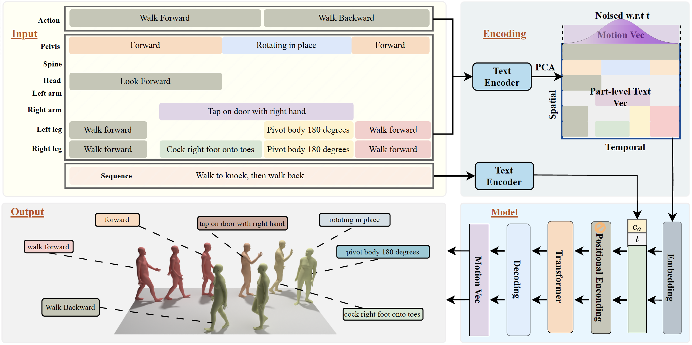

Human motion generation from text prompts has made remarkable progress in recent years. However, existing methods primarily rely on either sequence-level or action-level descriptions due to the absence of fine-grained, part-level motion annotations. This limits their controllability over individual body parts.
In this work, we construct a high-quality motion dataset with atomic, temporally-aware part-level text annotations, leveraging the reasoning capabilities of large language models (LLMs). Unlike prior datasets that either provide synchronized part captions with fixed time segments or rely solely on global sequence labels, our dataset captures asynchronous and semantically distinct part movements at fine temporal resolution.
Based on this dataset, we introduce a diffusion-based part-aware motion generation framework, namely FrankenMotion, where each body part is guided by its own temporally-structured textual prompt. This is, to our knowledge, the first work to provide atomic, temporally-aware part-level motion annotations and have a model that allows motion generation with both spatial (body part) and temporal (atomic action) control.
Experiments demonstrate that FrankenMotion outperforms all previous baseline models adapted and retrained for our setting, and our model can compose motions unseen during training.
Our work introduces the Frankenstein Dataset, the largest dataset providing hierarchical, temporally-aware annotations for 3D human motion. Generated automatically using our FrankenAgent, this dataset features high-quality, diverse motion annotations.
Sequence-Level
Top Text (Global)
Action-Level
Bottom Bar (Segments)
Part-Level
Colored Body Parts

Our model is a transformer-based diffusion model that can be input conditioned on a) sequence level prompt, b) action-level prompt and c) part-level prompt. After training with our paired data of motion and structured multi-granularity text annotations, it learns the essential motion elements and how to compose them into complex motions.
To the best of our knowledge, no prior method is able to accomplish this complex task of hierarchical control. For fair comparison, we adapted state-of-the-art methods (UniMotion, DART, and STMC) to include part control and retrained them on our Frankenstein dataset.
🏆 FrankenMotion (Ours)
UniMotion
Missing turn before sitting.
DartControl
Temporal misalignment.
STMC
Ignores trajectory (walking in place).
🏆 FrankenMotion (Ours)
UniMotion
No pulling back after throwing.
DartControl
Repeats throwing motion.
STMC
Wrong arm used.
🏆 FrankenMotion (Ours)
UniMotion
No pivot; leg stays.
DartControl
Repeats throw.
STMC
Wrong leg movement.
🏆 FrankenMotion (Ours)
UniMotion
S-shape instead of U.
DartControl
No U-shaped path.
STMC
Incorrect walking style.
🏆 FrankenMotion (Ours)
UniMotion
Normal walking instead of support.
DartControl
Unnatural movement.
STMC
Ignores obstacles.
🏆 FrankenMotion (Ours)
UniMotion
Never sits down.
DartControl
Repeats sitting.
STMC
No moving before sitting.
🏆 FrankenMotion (Ours)
UniMotion
Arm crossing under chest.
DartControl
Arm not put down.
STMC
Arm crossing under chest.
These ablations highlight the importance of our hierarchical conditioning. Notice how motion quality degrades as conditioning layers are removed.
Part + Action + Sequence (Full)
Natural throw & pull
Part + Action (No Sequence)
No pull back
Part Only
Unnatural motion
Part + Action + Sequence (Full)
Correct and natural
Part + Action (No Sequence)
Incorrect count; turning to the right
Part Only
Not natural jumping jacks
Part + Action + Sequence (Full)
Clasped hands & bowed
Part + Action (No Sequence)
Does not resemble praying
Part Only
Crosses arms
@article{li2026frankenmotion,
title={{FrankenMotion}: Part-level Human Motion Generation and Composition},
author={Li, Chuqiao and Xie, Xianghui and Cao, Yong and Geiger, Andreas and Pons-Moll, Gerard},
journal={arXiv preprint arXiv:2601.10909},
year={2026}
}